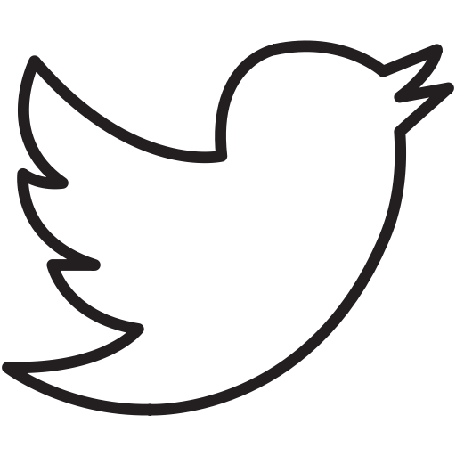
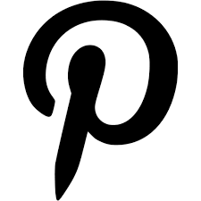
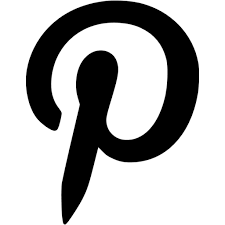
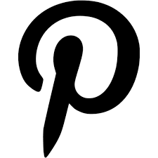

Food Photography Tips & Resources
Start here if you're an newbie photographer:
Your first step: download my free e-book FOOD PHOTOGRAPHY & STYLING: For Bloggers on a Budget.
This e-book is divided into sections on cameras and equipment, information on my favorite free and paid photography, how to troubleshoot common food photography issues, food and travel and so much more.
Latest in Food Photography Tips and Resources
Enjoyed this post? Share it on social media!

 

